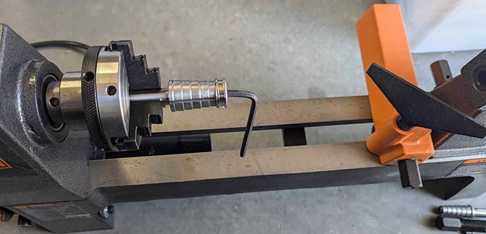

Your choice of crushed stone
Ring blank
Lathe
Mandrel(s) that fit your blank
4 or 5 Sandpaper sheets in varying grits (120-1200)
Medium thickness CA glue and/or UV resin
CA glue activator spray
Small bowl of water
Dremel (Optional, but helpful for harder stones)
Tweezers
Paper Towels
Before we get started, we will want to set up our work station.
So, to get started, we will want to put our mandrel in the lathe and put your ring blank on the mandrel.
You can tighten the blank on the mandrel using the alan wrench that should have come with the mandrel.
Make sure everything else is close, especially your crushed stone and choice of adhesive.

Though you can use either CA glue or UV Resin here, I suggest using CA glue for
this step because it sets quick, allowing you to more quickly add stones without worrying about glue dripping.
To start adding stones, drop a little bit of CA or resin into the channel on the blank and use the tweezers to place stones in the glue.
I suggest trying to use stones that don't stick up above the channel as much as possible, as it makes for less sanding later.
After covering a side with stones, spray a little bit of activator over the stones, (or place in sun if using UV Resin).
This will quickly set the glue and allow you to turn the blank without stones falling out. When completing this step,
you will want to use as little glue as possible while still holding the stones in place. Also, try to have as few gaps between stones as possible.
You can fill these in using smaller stones or some sort of stone powder. Glow powder can look really cool as well.
To start, you will want to wear some sort of dust mask for this step. You don't want to be breathing stone dust.
If you are using a very hard stone like Malachite, I would suggest using a dremel to sand down the stone as close to the top of the channel
as possible without touching the blank. For softer stones such as Turquoise, a medium grit sandpaper is will work great. Whether using
a dremel or sandpaper, especially with the lower grits, be careful about accidentally sanding the blanks. Depending on the material of the blank,
wood or bone especially, sanding the blank will damage it. You don't have to worry as much if you are using something like steel or ceramic.
To start sanding with the sandpaper, you will want to cut the sheets into long strips, and starting with the lower grits, dip the strip in water
before sanding. This helps control dust and protect the stone. Going from the lower grit(~120) to the medium grits(~600), turn the lathe on and sand the stone down
until it is right at the edge of the channel.
Once the stone is even with the top of the channel, you will begin Polishing the stone with the higher grit sandpaper.
Just like you did with the lower grits, you will want to get the strips wet to protect the stone and help polish it.
Repeat what you did in the last step, just with your 2-3 highest grit sandpapers. Once the stone is sufficiently polished,
wipe of any dust or water from the surface and move on to the next step.
You can use UV Resin or CA Glue for this step, but I recommend using the resin. Resin dries clearer, drips less, and is much more durable over time.
No matter which one you use, you will want to make sure the lathe is off and will slowly squeeze out a little bit of resin over the stone while turning the lathe manually.
It is important that you cover not only the stone, but also the entire outside of the ring, edges and all. Be careful with using too much though.
You don't want it to pool anywhere.
If you did the last step correctly, the ring should be all done, but sealing the ring correctly takes a lot of practice, and is still somehting I struggle with.
When using CA glue especially, it is easy to get bubbles or pooling that you may need to file off with sandpaper or a metal file which is why resin is so nice.
Resin doesn't bubble nearly as much, and is thicker than CA glue so it doesn't pool as easily.
Great job on making a stone inlay ring. You first ring may not be perfect, but with more practice, the techniques presented here will become second nature and
you will be creating beautiful inlay rings in no time.